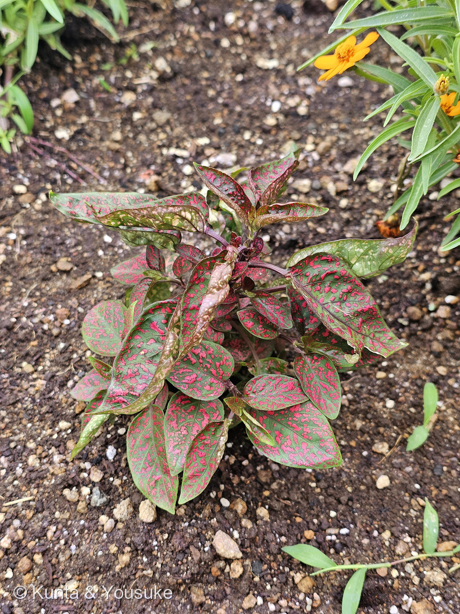
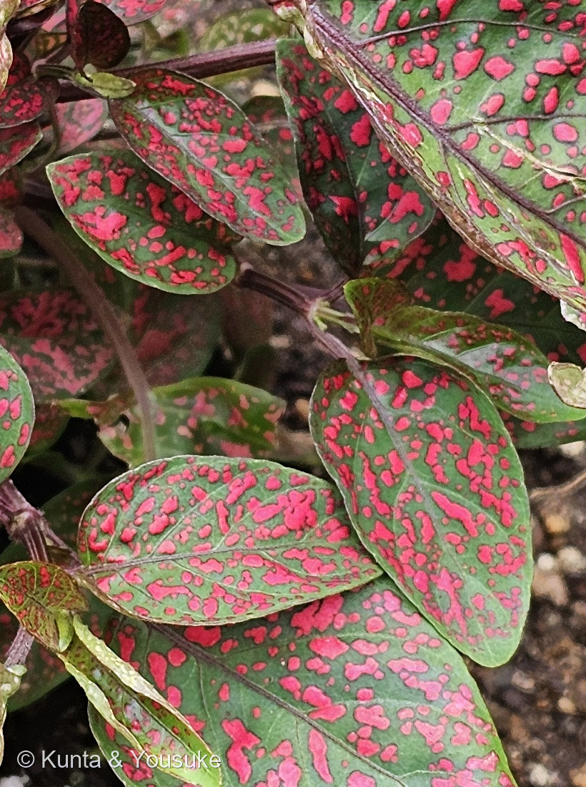
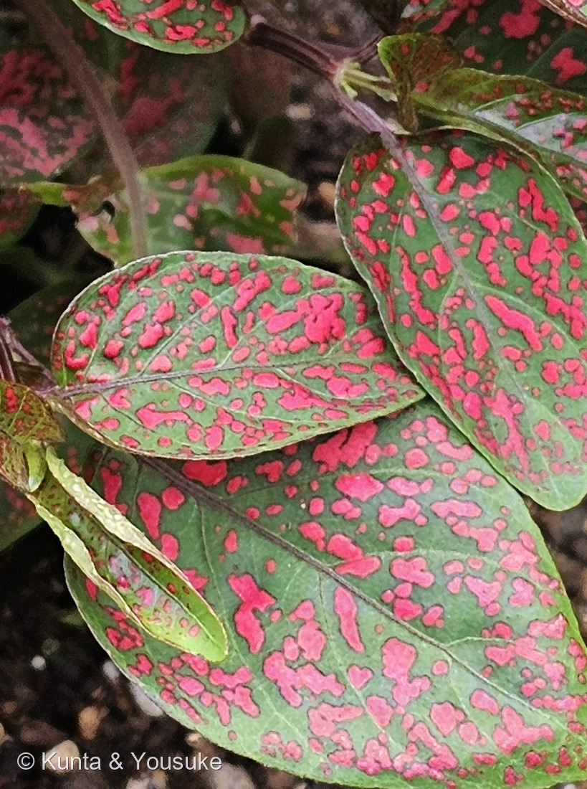

地図を読み込んでいるよ…
🔍 写真も地図も、押しているあいだ拡大して見られるよ（スマホは指を置いてすこし待ってね）。
🌍 の地図＝この子がもともと自生している場所を緑に。マダガスカル原産。日本には園芸植物として入り、鉢植えや、夏の花壇の「葉もの」としてよく植えられている。くわしくは下の地図の説明を見てね。
⭐マダガスカルの子だよ。三河の植物観察は「マダガスカル原産」とする。⭐⭐マダガスカルはアフリカの東の海にうかぶ大きな島で、そこにしかいない生きものがとても多いところ＝⚠この緑は島ぜんぶだけれど、ほんとうにいるのはその中の、限られた林のなかだと思って見てね。⭐⭐⭐そして日本は塗っていない＝ぼくらが会ったのはパーキングエリアの花壇＝人が植えた株＝⭐この子は夏の花壇の「葉もの」として、鉢や花壇でよく使われている。⚠寒さに弱いので、日本の屋外では冬をこせないことが多い＝⭐だから花壇の子は、たいてい一年かぎりで植えかえられる。⭐⭐同じキツネノマゴ科の029 コエビソウはメキシコ原産＝⚠島と大陸、地球の反対がわ同士＝⭐それでも二人とも「苞が主役」という、この科の同じ特徴を持っているよ。⭐おまけのキツネノマゴは、それとは逆に日本の在来種＝⭐この科で、ぼくらの足もとにいる子だよ。
⚠ 地図は国（日本と中国だけ県・省）までしか塗れないから、ほんとうの分布より広く見えていることがあるよ。地図はだいたいの場所。正確なところは、上の文を見てね。
ヒポエステス（ソバカスソウ）
Hypoestes phyllostachya Baker
和名 ソバカスソウ（雀斑草） 英名 polka dot plant（水玉の草）· freckle-face（そばかす顔）· measles-plant（はしかの草）· flamingo-plant
キツネノマゴ科 · Acanthaceae（ヒポエステス属 Hypoestes・シソ目 Lamiales）── ⭐029 コエビソウに続いて2人目のキツネノマゴ科／⭐⭐この科は「苞が主役の科」なんだ
燻太さんの言葉「パーキングエリアの花壇に植わっていた、不思議な模様の子だよ。陽介には何の植物だか見当がつく？ トウダイグサ科とか、ナス科かな？」── ⭐⭐どちらも「そう見える理由」がちゃんとある見当だったよ。一つずつ落としていくね
⭐⭐⭐⭐⭐ 名前と学名の由来 ── 人は模様を見て、学者は苞を見た
- ⭐⭐人がつけた名前は、ぜんぶ模様の名前だよ。──和名はソバカスソウ（雀斑草）。英名は polka dot plant（水玉の草）・freckle-face（そばかす顔）・measles-plant（はしかの草）・flamingo-plant。⭐日本語も英語も、みんな同じところを見ている。
- ⭐⭐⭐⭐⭐ところが、学名は模様のことを一言も言っていないんだ。
- ⭐⭐属名 Hypoestes＝ギリシャ語の hypo（下）＋ estia（家）＝⭐「萼が苞におおわれている」ことから（ミズーリ植物園）。
- ⭐⭐種小名 phyllostachya＝「葉のような穂」＝⭐花穂につく葉のような苞にちなむ（同）。
- ⭐⭐⭐⭐⭐つまり、属名も種小名も、どちらも苞のことを言っている。──⭐あの派手なピンクの葉には、学名は見向きもしていない。⭐⭐人が見たのは模様、学者が見たのは花のつくり。同じ一株の、ちがうところを見ているんだね。
- ⭐命名者の Baker は、キュー植物園のジョン・ギルバート・ベイカー。
この植物のこと ── 2人目のキツネノマゴ科、そして「苞が主役の科」
- マダガスカル原産の常緑多年草。高さ10〜60cm（三河の植物観察）。⭐日本では鉢植えと、夏の花壇の「葉もの」としてよく植えられているよ。
- 葉は対生。葉身は卵形〜長卵形、長さ4〜7cm、先は鋭形で、ふちは全縁（三河）。
- ⭐⭐斑の書きかたが、燻太さんの「不思議な模様」にぴったりだったよ。
上面にスプレーでペイントしたようなピンク色、ローズ色、ラベンダー又は白色の斑点が密にあり、下面の斑点はかなり薄色
⭐写真③そのものだね。⏳「下面はかなり薄色」は、まだ確かめていないから宿題にしたよ。 - 花期は9〜12月。ピンク色〜紫色、または白色で、「スイカズラの花に似ている」（三河）。⭐総状花序で、長さ15cm以下。⏳もうすぐだね。
- ⭐⭐⭐029 コエビソウに続いて、2人目のキツネノマゴ科。──⭐⭐そして、この二人には共通点があるんだ。
- ⭐⭐⭐⭐⭐029 コエビソウの、あの赤い「エビ」は苞だった。──⭐燻太さんが「花びらかと思ったら、これは葉っぱかな」と気づいて、大正解だった、あれ。
- ⭐⭐⭐⭐そして290の学名も、属名・種小名の両方が苞のことを言っている。──⭐⭐キツネノマゴ科は、苞が主役の科なんだ。⚠ただしこの子だけは、目立っているのが苞ではなく葉。⭐科のなかで、ひとりだけ別のところで目立っている子だね。
⭐⭐⭐⭐⭐ 同定について ── 燻太さんの見当に答えるよ
燻太さんの見当＝「トウダイグサ科とか、ナス科かな？」⭐⭐どちらも「そう見える理由」がちゃんとある見当だったよ。一つずつ落としていくね。
- ⭐⭐⭐【ナス科】は、一つで落とせる。──⭐⭐ナス科の葉は、ふつう互生（⚠花のあたりで対に見えることはある）。⭐ところがこの子は、はっきり十字対生。
- ⭐⭐写真②を見てね。──一つの節から葉が2枚ずつ向かい合って出て、その上の組が90度ずれている。⭐斑入りのトウガラシのような園芸品種もあるけれど、あちらもやっぱり互生だよ。
- ⭐⭐⭐【トウダイグサ科】は、3つで落とせる。──⭐これはとても筋のいい見当だと思う。図鑑には062 ハツユキソウも089 ハツユキカズラもいて、あの科は「葉が色づく」代表だからね。
- ①⭐⭐トウダイグサ科で葉が色づく子は、色が花のまわりの上のほうの葉（苞）に集中する。──株の下の葉は緑のまま。⚠この子はいちばん下の葉まで、ぜんぶ斑がある（写真①）。
- ②⭐⭐斑の形がちがう。──ハツユキソウはふちに沿った白い帯で、きちんと構造がある。⭐この子は吹きつけたような不規則な斑点。
- ③⏳⭐トウダイグサ科なら、茎を切ると白い乳液が出る（⭐289 コニシキソウで書いたばかりだね）。⚠公共の花壇の株なので切らないけれど、これは確かめられる宿題にしたよ。
- ⭐そのうえで、キツネノマゴ科に着地する。──十字対生・全縁・卵形〜長卵形の葉が、三河の記載と合う。⭐斑の入りかたの記述も、写真③そのものだった。
- ⚠園芸品種は20以上ある（'Pink Splash' 'Rose Spot' など）＝⭐どの品種かまでは決めていないよ。
⭐⭐⭐⭐ 「斑点のある」という名前の話が、3人つづいた
- ⭐きのうときょうで、おもしろい並びができたんだ。
- ⭐⭐289 コニシキソウ＝種小名 maculata＝「斑点のある」。⚠それなのに、燻太さんが見つけた株には斑点が無かった。
- ⭐⭐029 コエビソウ＝旧学名 Beloperone guttata の guttata も「斑点のある」。⭐こちらはある──ただし、白い花の下くちびるの、小さなあずき色の斑点のこと。⭐目立つ赤いエビのほうではなくて、よく見ないと分からないところ。
- ⭐⭐⭐⭐⭐そして、この子＝全身が斑点だらけなのに、学名は斑点に一言も触れていない。⭐属名も種小名も、苞のことだけ。
- ⭐⭐⭐三人ならべると、こうなるよ。──名前に斑点があって株に無い子（289）／名前にも株にもあるけれど、見えにくいところにある子（029）／株じゅうにあるのに、名前に無い子（290）。
- ⭐⭐学名は「その人がいちばん大事だと思ったところ」を書いたもので、いちばん目立つところとはかぎらないんだね。
出典：三河の植物観察「ヒポエステス Hypoestes phyllostachya」／Missouri Botanical Garden Plant Finder「Hypoestes phyllostachya」（属名・種小名の語源）／日本語版Wikipedia「ヒポエステス属」。